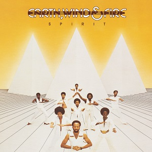
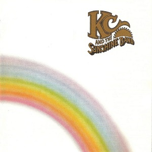

Stevie Wonder
Songs in the Key of Life
9¾

David Bowie
Station to Station
7½

Tom Waits
Small Change
7¼
The Modern Lovers
The Modern Lovers
7¼
Ramones
Ramones
6¾
Rush
2112
6¾

Jean Michel Jarre
Oxygène
6½

Geinoh Yamashirogumi
Osorezan / Dō no Kenbai
6¼
ABBA
Arrival
6¼

Serge Gainsbourg
L'Homme à Tête de Chou
6¼
Blondie
Blondie
6¼

Vangelis
Albedo 0.39
5¾
Bob Dylan
Desire
5¾

Heart
Dreamboat Annie
5½

Patti Smith Group
Radio Ethiopia
5¼
Queen
A Day at the Races
5

Tangerine Dream
Stratosfear
5

Geinoh Yamashirogumi
Chi no Hibiki
5

Ryo Fukui
Scenery
4¾

Steely Dan
The Royal Scam
4¾

Jeff Beck
Wired
4¾
Genesis
Wind & Wuthering
4¾

Popol Vuh
Letzte Tage, Letzte Nächte
4¾
Tom Petty & The Heartbreakers
Tom Petty & The Heartbreakers
4½

Eagles
Hotel California
4¼
Hiroshi Suzuki
Cat
4¼

Akiko Yano
Japanese Girl
4¼

Popol Vuh
Music From the Film "Aguirre"
4

Thin Lizzy
Jailbreak
3¾

Donna Summer
Four Seasons of Love
3¾
Donna Summer
A Love Trilogy
3¾

Fela Kuti & Africa 70
Kalakuta Show
3¾
Thin Lizzy
Johnny the Fox
3½

Boston
Boston
3½
Mort Garson
Mother Earth's Plantasia
3½

Pat Metheny
Bright Size Life
3½
Sadao Watanabe
Pamoja
3½

Chico Buarque
Meus Caros Amigos
3½
Black Sabbath
Technical Ecstasy
3½
Aerosmith
Rocks
3½

Scorpions
Virgin Killer
3½
Led Zeppelin
Presence
3½
Split Enz
Second Thoughts
3¼
Yoshiko Sai
Mikkō
3¼

Bryan Ferry
Let's Stick Together
3¼

Wings
Wings at the Speed of Sound
3¼

Judas Priest
Sad Wings of Destiny
3¼
Elton John
Blue Moves
3

Funkadelic
Hardcore Jollies
3
- 
Earth, Wind & Fire
Spirit
3
Kiss
Destroyer
3

The Rolling Stones
Black and Blue
3

Pink Lady
Pepper Keibu
3

AC/DC
Dirty Deeds Done Dirt Cheap
2¾

Genesis
A Trick of the Tail
2¾

Taeko Ohnuki
Grey Skies
2¾
Slade
Nobody's Fools
2¾

Cliff Richard
I'm Nearly Famous
2¾
Boney M.
Take the Heat Off Me
2½
Suzi Quatro
Aggro-Phobia
2½

Ifang Bondi & The Afro Mandingue Sounds
Saraba
2½
Funkadelic
Tales of Kidd Funkadelic
2½

Alice Cooper
Alice Cooper Goes to Hell
2½

T. Rex
Futuristic Dragon
2½
Sweet
Give Us a Wink
2½

Ted Nugent
Free-for-All
2½
Can
Flow Motion
2½

Miles Davis
Water Babies
2¼
Lou Reed
Rock and Roll Heart
2¼

Tatsuro Yamashita
Circus Town
2
France Gall
France Gall
2

George Harrison
Thirty Three & 1/ॐ
2
Kiss
Rock and Roll Over
2
Witch
Lukombo Vibes
2

Commodores
Hot on the Tracks
2

Fairport Convention
Gottle o' Geer
2
Sparks
Big Beat
1¾

Journey
Look Into the Future
1¾

Hall & Oates
Bigger Than Both of Us
1¾
- 
KC & The Sunshine Band
Part 3
1½

Dolly Parton
All I Can Do
1½

AC/DC
T.N.T.
1½
Hako Yamasaki
Tsunawatari
1½
Rick Springfield
Wait for Night
1½

The O'Jays
Message in the Music
1½
Ringo Starr
Ringo's Rotogravure
1¼
The Stills-Young Band
Long May You Run
1

Jethro Tull
Too Old to Rock 'n' Roll: Too Young to Die!
1
Momoe Yamaguchi
17-sai no Theme
1
Momoe Yamaguchi
Pearl Color ni Yurete
1
Momoe Yamaguchi
Yokosuka Story
1
Vangelis
La Fête Sauvage
1

REO Speedwagon
R.E.O.
1
Showaddywaddy
Trocadero
1